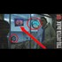

<!DOCTYPE html>
<html lang="en">
 <head>
<!-- Favicon -->
<link rel="shortcut icon" href="../../favicon.ico">
  <meta charset="utf-8"/>
  <title>
   5 predictive programming links between Pizzagate and DHS advertisement #NWO
  </title>
  <meta content="Post on /v/Pizzagate archived on 2017-02-07 by sunajAeon." name="description"/>
  <meta content="5 predictive programming links between Pizzagate and DHS advertisement #NWO" property="og:title"/>
  <meta content="Post on /v/Pizzagate archived on 2017-02-07 by sunajAeon." property="og:description"/>
  <link href="../../static/css/page.css" rel="stylesheet"/>
  <meta content="https://voat.pizzagate.hackliberty.org/thumbnails/8e/6c/8e6c1615-668b-46fa-913d-b4e5a7b4aa20.jpg" property="og:image"/>
  <meta content="https://voat.pizzagate.hackliberty.org/v/pizzagate/1624681.html" property="og:url"/>
  <meta content="width=device-width, initial-scale=1" name="viewport"/>
  <link href="https://voat.pizzagate.hackliberty.org/1624681.html" rel="canonical"/>
  <meta content="article" property="og:type"/>
  <meta content="Voat /v/Pizzagate Archive" property="og:site_name"/>
  <meta content="en_US" property="og:locale"/>
  <meta content="summary_large_image" name="twitter:card"/>
  <meta content="5 predictive programming links between Pizzagate and DHS advertisement #NWO" name="twitter:title"/>
  <meta content="Post on /v/Pizzagate archived on 2017-02-07 by sunajAeon." name="twitter:description"/>
  <meta content="https://voat.pizzagate.hackliberty.org/thumbnails/8e/6c/8e6c1615-668b-46fa-913d-b4e5a7b4aa20.jpg" name="twitter:image"/>
 </head>
</html>
<body class="dark">
 <div id="container">
  <!-- array (
  'submissionid' => 1624681,
  'creationDate' => '2017-02-07 01:18:26',
  'domain' => 'youtube.com',
  'formattedContent' => NULL,
  'isAdult' => 0,
  'isAnonymized' => 0,
  'subverse' => 'pizzagate',
  'thumbnail' => '8e6c1615-668b-46fa-913d-b4e5a7b4aa20.jpg',
  'title' => '5 predictive programming links between Pizzagate and DHS advertisement #NWO',
  'url' => 'https://www.youtube.com/watch?v=VQAba57jaxw',
  'userName' => 'sunajAeon',
  'archivedLink' => NULL,
  'archivedDomain' => NULL,
  'isDeleted' => 0,
) -->
  <div style="text-align:center; font-size:24px; font-weight:bold;">
   <a href="../../index.html" style="text-decoration: none; color: inherit;">
    Voat /v/Pizzagate Archive
   </a>
  </div>
  <div class="content" role="main">
   <div class="sitetable linklisting" id="siteTable">
    <div class="submission id-1624681 link type-text" id="submission-1624681">
     <a name="submissionTop">
     </a>
     <p class="parent">
     </p>
     <a class="thumbnail may-blank" href="https://www.youtube.com/watch?v=VQAba57jaxw" target="_self">
      
     </a>
     <div class="entry unvoted">
      <p class="title">
       <a class="title may-blank" href="https://www.youtube.com/watch?v=VQAba57jaxw" tabindex="1" target="_self" title="5 predictive programming links between Pizzagate and DHS advertisement #NWO">
        5 predictive programming links between Pizzagate and DHS advertisement #NWO
       </a>
       <span class="domain">
        (
        <a href="https://archive.searchvoat.co/search.php?d=youtube.com">
         youtube.com
        </a>
        )
       </span>
      </p>
      <p class="tagline">
       submitted
       <time datetime="2017-02-07T01:18:26+00:00" title="02/07/2017 1:18:26 AM">
        2017-02-07T01:18:26
       </time>
       by
       <span class="userattrs">
        <a class="author may-blank" href="https://archive.searchvoat.co/search.php?u=sunajAeon">
         sunajAeon
        </a>
       </span>
      </p>
      <ul class="flat-list buttons">
       <li class="first">
        <a class="comments may-blank" href="https://archive.searchvoat.co/v/pizzagate/1624681" rel="nofollow">
         3 comments
        </a>
       </li>
      </ul>
     </div>
     <div class="child">
     </div>
     <div class="clearleft">
     </div>
    </div>
    <div class="clearleft">
    </div>
   </div>
   <div class="horizontal-line">
   </div>
   <div class="commentarea">
    <div class="sitetable nestedlisting" id="siteTable">
     <div class="child id-7932940 comment even" style="">
      <div class="entry unvoted">
       <div class="noncollapsed" id="7932940" style=";">
        <p class="tagline">
         <a class="author may-blank" href="https://archive.searchvoat.co/search.php?u=Flat_Truth">
          Flat_Truth
         </a>
         <span class="userattrs">
         </span>
         <time datetime="2017-02-07T03:18:00+00:00" title="2/7/2017 3:18:00 AM">
          2017-02-07T03:18:00
         </time>
        </p>
        <div class="usertext-body may-blank-within" id="commentContent-7932940">
         <div class="md">
          <p>
           <p>
            I noticed its obviously a pizza place....but the signage says "breakfast (all day)...lunch....dinner".  Kind of weird. pizza is not typically a breakfast food.  If you read into that a little bit, it reveals how those way up the flag pole from the pizza shop operate.  But this investigation has not really touched on that much.  What about the link to Walt Disney with the Sheriff who created the badge with the pedo logo?  Those two and other affluent people created an all men's club called the "uplifters" in the 1930's and produced the play called "The uplift of lucifer"....and they were big on children's programs....sponsoring boys clubs and so forth.
           </p>
           <p>
            If analyzed, the three strongest letters in "Breakfast" vaguely spell out "SEX" with the words "all day" beneath that.  Upon quick glance or if blurred, the mind could read it as "SEX all day".  I know it sounds like a stretch...but when you look into how Disney does their thing...its in the same ballpark.   There's no reason mountains in a Disney cartoon should be drawn to look unmistakenly  like a pair of tits....or Minny's dress an obvious male part.  What, the animator didn't notice the frames he edited showed the woman character's crotch?  What about the stick figures doing it doggy style and the figures labeled "Roger" and "mommy" in a piece of art on the wall in the kid's room of the Monster movie?  What about in Pochohantis, in the little girls room there's "selfies" all over the wall of her posing in thong bikini underwear?  The animator must not have noticed they drew that stuff in, and the editors must have missed it too.  Am just sayin'  Am pretty sure everyone watching the final production in real time missed it....but did their subconscious mind miss it?  I don't know, there's been a lot of study into how to affect the subconscious mind.
           </p>
          </p>
         </div>
        </div>
        <ul class="flat-list buttons">
         <li class="first">
          <a class="bylink" href="https://archive.searchvoat.co/v/pizzagate/1624681/7932940" rel="nofollow">
           link
          </a>
         </li>
        </ul>
       </div>
      </div>
     </div>
     <div class="child id-7931582 comment even" style="">
      <div class="entry unvoted">
       <div class="noncollapsed" id="7931582" style=";">
        <p class="tagline">
         <a class="author may-blank" href="https://archive.searchvoat.co/search.php?u=Jem777">
          Jem777
         </a>
         <span class="userattrs">
         </span>
         <time datetime="2017-02-07T01:33:53+00:00" title="2/7/2017 1:33:53 AM">
          2017-02-07T01:33:53
         </time>
        </p>
        <div class="usertext-body may-blank-within" id="commentContent-7931582">
         <div class="md">
          <p>
           <p>
            Strongly encourage everyone to visit this site The Outer Dark Youtube. This "researcher" has vast knowledge of the occult including how to recognize iconography throughput at least modern history. Specifically relates the Nazi occult and what is happening in our world right now. Has connections to the deep state interviews clandestine CIA officers. Trying to help it appears. Short succinct lessons that will blow your mind.
           </p>
          </p>
         </div>
        </div>
        <ul class="flat-list buttons">
         <li class="first">
          <a class="bylink" href="https://archive.searchvoat.co/v/pizzagate/1624681/7931582" rel="nofollow">
           link
          </a>
         </li>
        </ul>
       </div>
      </div>
     </div>
     <div class="child id-7931418 comment even" style="">
      <div class="entry unvoted">
       <div class="noncollapsed" id="7931418" style=";">
        <p class="tagline">
         <a class="author may-blank" href="https://archive.searchvoat.co/search.php?u=sunajAeon">
          sunajAeon
         </a>
         <span class="userattrs">
         </span>
         <time datetime="2017-02-07T01:19:25+00:00" title="2/7/2017 1:19:25 AM">
          2017-02-07T01:19:25
         </time>
        </p>
        <div class="usertext-body may-blank-within" id="commentContent-7931418">
         <div class="md">
          <p>
           <p>
            After studying this  video it  is apparent the thesis of the title proves correct-this is  good  news  for the   investigation!
           </p>
          </p>
         </div>
        </div>
        <ul class="flat-list buttons">
         <li class="first">
          <a class="bylink" href="https://archive.searchvoat.co/v/pizzagate/1624681/7931418" rel="nofollow">
           link
          </a>
         </li>
        </ul>
       </div>
      </div>
     </div>
    </div>
   </div>
  </div>
 </div>
<!-- Footer Section -->
<footer class="container-fluid mt-3">
  <p class="small mb-0">
    /v/pizzagate archive has 40446 posts and 683312 total comments.
    <a href="https://git.hackliberty.org/c0mmando/voat-pizzagate-archive/">source code</a>.
  </p>
</footer>

<script src="../../static/js/jquery-3.7.1.slim.min.js"></script>
<script src="../../static/js/comments-toggle.js"></script>

</body>
